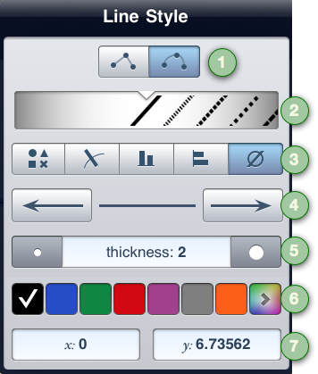

1 — Tap the line type buttons to view your line’s segments as straight or curved. The button on the left creates straight segments and the button on the right, curved.
2 — Drag the carousel to specify a stroke type for your line. Choose between various dashes, ticks, and arrows.
3 — If you have your points selected with your line, tap the point type to specify a point style. Choose to view your points as shapes, ticks, bars, or not at all!
4 — Use the arrow buttons to view your line’s endpoints as arrows (or to change them from arrows to points if the arrow is already visible). Use the arrow button on the left to show or hide the arrow for the line’s starting point; use the arrow button on the right to show or hide the arrow for the line’s endpoint. The buttons do not always correspond to the leftmost or rightmost point; they correspond to the way the line was originally drawn. For example, if you draw a line from right to left and then, in the popover, press the arrow button on the left, it creates an arrow on the rightmost end of the line because that is where the line began.
5 — Use the buttons to the left and right of the line thickness cell to change the line thickness. The button on the left decreases the thickness and the button on the right increases the thickness. Tap the cell in the center to type in a thickness.
6 — Select a chit to change the line color from the displayed palette or tap the rainbow chit on the right to see more color options.
7 — Change the line coordinates to move the line to a precise location on the graph by tapping in the cells and then typing an x or y coordinate. The x-coordinate corresponds to the point on the line that is closest to the x-origin, and the y-coordinate applies to the point closest to the y-origin. If the points of the line are selected, the coordinates also apply to the points. In the event that you don’t want all the points stacked on top of each other, be sure to tap the line a second time to deselect its points.